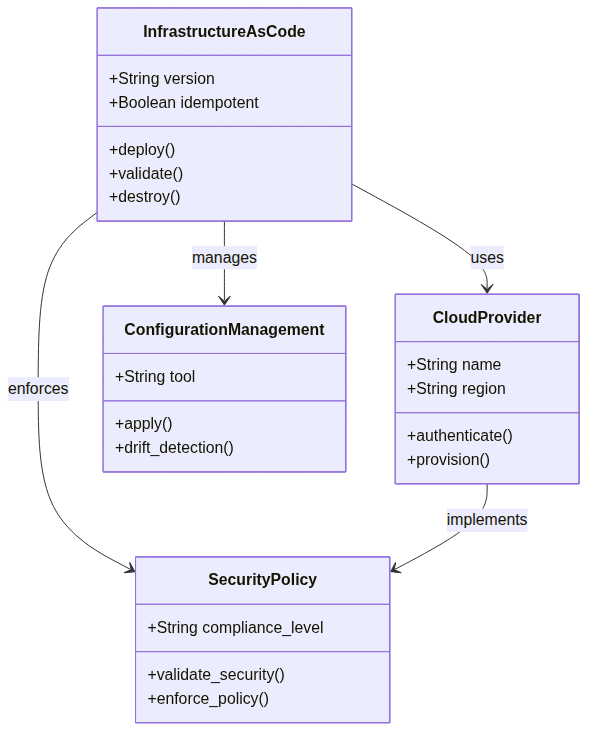

Glossary

This Glossary contains definitioner of centrala termer as is used genAbout the Book and as forms the foundation for Architecture as Code methodology.
Fundamental Concepts and tools
API (Application Programming Interface): Gränssnitt as enables kommunikation between different mjukvarukomponenter or systems through standardized protokoll and dataformat.
Architecture as Code-automation: Process where manual uppgifter utfors automatically of datorsystem without human intervention, that ökar effektivitet and reduces felrisk.
CI/CD (Continuous Integration/Continuous Deployment): Utvecklingsmetodik as integrerar kodändringar kontinuerligt and automates driftsättningsprocessen for snabbare and säkrare leveranser.
Cloud Computing: Leverans of IT-services as servers, lagring and applications over internet with åtkomst at begäran and betalning per use.
Containers: Lätt virtualiseringsteknik as paketerar applications with all dependencies for portabel körning across different environments and plattformar.
Declarative programming: Programmeringsparadigm that describes desired end result instead for specific step to achieve the, which enables higher abstraktion.
DevOps: cultural and technical approach as combines development (Dev) and drift (Ops) for snabbare leveranser and forbättrat samarbete between team.
Git: Distribuerat versionhanteringssystem to spåra changes in source code under development with support for branching and merging.
Idempotens: Egenskap at operationer as produces same resultat oavsett how many gånger the is run, kritiskt for secure Architecture as Code-automation.
Architecture as Code (Architecture as Code) (Architecture as Code) (Architecture as Code): Praktiken to handle infrastructure through Architecture as Code instead for manual processes, which enables version control and automation.
JSON (JavaScript Object Notation): Textbaserat dataformat for Structured informationsutbyte between systems with human-readable syntax.
Kubernetes: Open source code containerorkestreringsplattform for automatiserad deployment, skalning and handling of containeriserade applications.
Microservices: Arkitekturell approach where applications byggs as stemplate, oberoende services as kommunicerar via väldefinierade APIs.
Övervakning: Continuous systemövervakning to upptäcka problem, optimera performance and ensure togänglighet.
Orchestration: Automatiserad koordination and handling of complex workflows and systems to achieve desired state.
Policy as Code: Tovägagångssätt where security- and efterlevnadsregler are defined as code for automatiserad utvärdering and verkställande.
Terraform: Infrastructure as Code (Architecture as Code)-tools as uses declarative syntax to definiera and handle cloud infrastructure resources.
YAML (YAML Ain't Markup Language): Människoläsbart dataserialiseringsformat as often is used for konfigurationsfiler and Architecture as Code-definitioner.
Zero Trust: Säkerhetsmodell as aldrig litar at and always verifierar user and units before åtkomst to resurser beviljas.
Driftsättning and operational concepts
Blå-green deployment: Driftsättningsstrategi where två identical production environments (blå and green) is used to enable snabb recovery and minimal stoeståndstid.
Canary Release: gradual utrullningsstrategi where new versions forst deployeras to a liten subset of user for riskminimering and validation.
Community of Practice: Grupp of personer as parts passion for something the does and lär itself to do the bättre through regelbunden interaktion.
Conway's Law: Observation to organisationer designar systems as speglar their kommunikationsStructureer.
Tvärfunktionellt team: Team as includes withlemmar with different skills and roller as arbetar tosammans mot gemensamma goals.
GitOps: Operational framework as uses Git as enda källa for sanning for declarative infrastructure and applications.
Helm: Pakethanterare for Kubernetes as uses charts to definiera, installera and upgradera complex Kubernetes-applications.
Service Discovery: Mekanism as enables automatic detektion and kommunikation between services in distributed systems.
Service Mesh: Dedikerad infrastructurelager as handles service-to-service-kommunikation, security and observability in mikroservicesarkitekturer.
Edge Computing: Distributerad databehandlingsparadigm as placerar beräkningsresurser whenmare datakällan for minskad latens and improved performance.
Post-Quantum Cryptography: Kryptografiska algoritmer as is designade to vara secure mot angrepp from both klassiska and kvantumdatorer.
Carbon-Aware Computing: Approach to optimera infrastructureanvändning based on kolintensitet and fornybara energiSources for minskad miljöpåverkan.
Oforänderlig infrastructure: InfraStructureparadigm where components aldrig modifieras efter deployment without is replaced helt when changes is needed.
State Drift: Situation where The faktiska infrastructuretoståndet avviker from The definierade desired toståndet in Architecture as Code-definitioner.
Kostnadshantering and optimering
FinOps: Disciplin as combines finansiell handling with molnoperationer to maximera affärsvärdet of molninvesteringar through kostnadsoptimering and resource management.
Rightsizing: Process to optimera molnresurser by matcha instance-storlekar and typer with faktiska performancerequirements and usage patterns.
Spot Instances: Molninstanser as uses överskottcreatecitet to kraftigt reducerade priser but can termineras with kort varsel when kapacitet is needed for on-demand use.
Cost Allocation Tags: Metadataetiketter as is used to kategorisera and spåra molnresurskostnader per projekt, team, environment or andra organizational dimensioner.
Cost Governance: Ramverk of policies, processes and tools to styra and kontrollera molnkostnader within a organisation.
Resource Quotas: Begränsningar as sätts at how very of a viss resurs (CPU, minne, lagring) which can konsumeras within a given scope or namespace.
testing and kvalitetssäkring
Terratest: Open source Go-bibliotek for automatiserad testing of Infrastructure as Code, particularly designat for Terraform-moduler and cloud infrastructure.
Policy as Code: Approach where organizational policies, säkerhetsregler and compliance-requirements are defined as code and can automatically enforced and testade.
OPA (Open Policy Agent): Cloud-native policy engine as enables unified policy enforcement across different services and technologies through declarative policy language.
Chaos Engineering: Disciplin to experimentellt introducera fel in systems to bygga toit to system's ability to motstå turbulenta conditions in produktion.
Integration Testing: testing as verifierar to different components or services functions korrekt tosammans when the is integrerade in A systems.
Compliance Testing: Automatiserad validation of to systems and configurations follows relevanta regulatory requirements, security standards and organizational policies.
Strategiska and organizational concepts
Cloud-First Strategy: Strategisk approach where organisationer primarily choose cloud-based solutions for new IT-initiativ before on-premises alternatives övervägs.
Digital Transformation: fundamental change in affärsoperationer and värdeleverans through integration of digital technology in all aspects of verksamheten.
Multi-Cloud: Strategi to use molntjänster from multiple different providers to undvika vendor lock-in and optimera for specific capabilities or kostnader.
Data Sovereignty: Konceptet to digital data is underkastat lagarna and juridiktionen in the land where The is stored or bearbetas.
Conway's Law: Observation to organisationer designar systems as speglar their kommunikationsStructureer, which affects how team should organiseras for optimal systemdesign.
Cross-functional Team: Team as includes withlemmar with different skills and roller as arbetar tosammans mot gemensamma goals, essentiellt for DevOps-success.
DevOps Culture: cultural transformation from traditional utvecklings- and driftsilos to kollaborativa way of working as emphasizes shared ownership and continuous improvement.
Psychological Safety: Teammiljö where withlemmar känner itself secure to ta risker, erkänna misstag and experiment without rädsla for bestraffning or forödmjukelse.
Servant Leadership: Ledarskapsfilosofi as focuses on to tjäna teamet and främja their success rather than traditional kommando-and-kontroll-ledning.
Best Practice Evolution: Continuous development of rekommenderade methods based on praktisk erfarenhet, community feedback and technical framsteg.
Anti-Pattern: Vanligt forekommande but kontraproduktivt lösningsforslag as initialt verkar användbart but as leder to negative consequences.
Policy-as-Code: Metod where organizational policies, säkerhetsregler and compliance-requirements are defined as code for automatiserad enforcement and testing.
Infrastructure Governance: Ramverk of policies, processes and tools to styra and kontrollera infrastructure development and -drift within organisationer.
Technical Debt: Ackumulerad kostnad of shortcuts and suboptimala technical decisions as requires framtida refactoring or omarbetning to bibehålla systemkvalitet.
Blameless Culture: Organisationskultur as focuses on systemforbättringar efter incidenter rather than individual skuld, which främjar öppenhet and lärande.
Change Management: Systematisk approach to handle organizational changes, including stakeholder engagement, kommunikation and motståndhantering.
DevSecOps: Utvecklingsmetodik as integrerar säkerhetspraktiker through entire utvecklingslivscykeln rather than as a separat fas in slutet.
Site Reliability Engineering (SRE): Disciplin as toämpar mjukvaruingenjörsprinciper at operational problem to create skalbara and very reliable mjukvarusystem.